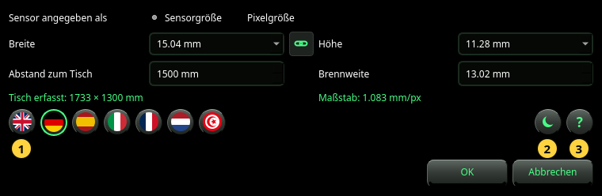

Einrichten
Die Kamera, die den Maßstab ergibt, die Sprache, das Design und das Handbuch.
Einrichten öffnet den Dialog Einrichten. Er enthält, was das Foto allein nicht sagen kann: wie weit die Kamera vom Tisch entfernt ist und, wenn das Foto es nicht angibt, das Objektiv und den Sensor. Außerdem wählt er die Sprache und das Design und öffnet dieses Handbuch.


Die Kamera
- Sensor angegeben als — wie Sie den Sensor beschreiben: durch seine Sensorgröße (Breite × Höhe in mm) oder durch seine Pixelgröße (Breite × Höhe eines Pixels in µm). Nehmen Sie Sensorgröße, es sei denn, Sie wissen, dass das Foto die volle Auflösung des Sensors hat.
- Breite und Höhe — die Größe des Sensors oder eines Pixels. Wählen Sie einen Eintrag aus der Liste oder tippen Sie eine Zahl. Im Modus Sensorgröße nennt die Liste gängige Sensorformate (1/2.3″, 1″, APS-C, Vollformat und andere); die Wahl eines Formats setzt auch seine Höhe.
- Die Kette zwischen ihnen — eingeschaltet folgt die Höhe der Breite (ein quadratisches Pixel oder ein quadratischer Sensor). Sie schaltet sich von selbst aus, wenn ein benannter Sensor eine andere Höhe hat.
- Abstand zum Tisch — von der Kamera bis zur Tischplatte, in mm. Messen Sie ihn: jeder Millimeter zählt (siehe Referenz).
- Brennweite — die Brennweite des Objektivs in mm, wie auf dem Objektiv aufgedruckt oder von der Kamera angezeigt. Nehmen Sie die echte Brennweite, nicht das Kleinbild-Äquivalent.
Unter den Feldern zeigt der Dialog in Grün, was diese Werte ergeben:
- Tisch erfasst — der Teil des Tisches, den das Foto zeigt, in mm.
- Maßstab — die Größe eines Pixels auf dem Tisch, in mm/px. Zwei Zahlen (zum Beispiel 0.578 × 0.646 mm/px) bedeuten, dass die Pixel nicht quadratisch sind.
Ein Ergebnis, das die Größe des Fotos braucht, lautet — (braucht ein Foto), bis im Fenster ein Foto gezeigt wird.
Die runden Tasten
- Die Flaggen — die Sprache. Eine Flagge ändert den Dialog sofort, damit Sie ihn lesen können; das ganze Programm folgt erst nach OK. Arabisch wird von rechts nach links geschrieben.
- Das Design — dunkle oder helle Bereiche. Wie die Sprache wird es im Dialog gezeigt und mit OK übernommen.
- Das ? — öffnet dieses Handbuch in einem eigenen Fenster, in der Sprache des Dialogs.
OK übernimmt alles. Wird ein Foto gezeigt und hat sich die Kamera geändert, wird es sofort neu analysiert. Abbrechen oder Esc ändert nichts, auch nicht die Sprache, die Sie sich angesehen haben.